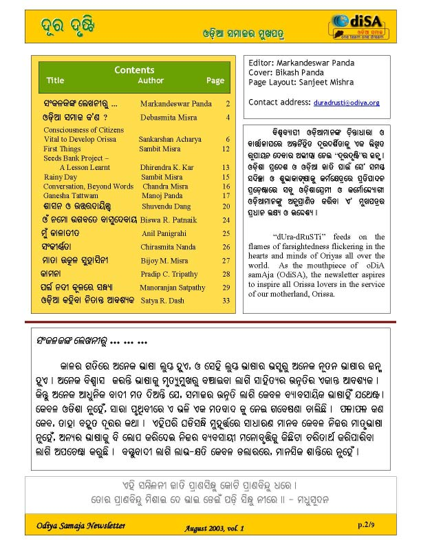

Read this issue page by page · All magazine issues
Original website page images from the additional backup · Separate saved revision
Restoration links to preserved documents. These are file downloads; the archive has no editing or submission features.
Published Word link in the saved August 2003 reader; recovered capture dated 23 October 2007. The PDF is preserved from a separate capture; identical revisions are not assumed.
Saved backup file; retain separately from published downloads. Filename labels do not establish revision order or final publication status.
Saved backup file; retain separately from published downloads. Filename labels do not establish revision order or final publication status.

Original address: http://www.odiya.org:80/duradrusti/august2003/index.asp